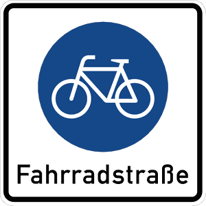

Zeichen 244.1
Beginn einer Fahrradstraße

70 Tatbestände dazu
141020Sie hielten auf einer Fahrradstraße (Zeichen 244.1, 244.2).
55 €
141021
Sie hielten auf einer Fahrradstraße (Zeichen 244.1, 244.2) und behinderten +) dadurch Andere.
70 €
141124
Sie parkten auf einer Fahrradstraße (Zeichen 244.1, 244.2).
55 €
141154
Sie benutzten als Nichtberechtigter *) <einen Radweg (Zeichen 237)/ einen Reitweg (Zeichen 238)/einen gemeinsamen Geh- und Radweg (Zeichen 240)/einen getrennten Rad- und Gehweg (Zeichen 241)/eine Fahrradstraße (Zeichen 244.1)/eine Fahrradzone (Zeichen 244.3)>.
15 €
141155
Sie benutzten als Nichtberechtigter *) <einen Radweg (Zeichen 237)/ einen Reitweg (Zeichen 238)/einen gemeinsamen Geh- und Radweg (Zeichen 240)/einen getrennten Rad- und Gehweg (Zeichen 241)/eine Fahrradstraße (Zeichen 244.1)/eine Fahrradzone (Zeichen 244.3)> und behinderten +) dadurch Andere.
20 €
141156
Sie benutzten als Nichtberechtigter *) <einen Radweg (Zeichen 237)/ einen Reitweg (Zeichen 238)/einen gemeinsamen Geh- und Radweg (Zeichen 240)/einen getrennten Rad- und Gehweg (Zeichen 241)/eine Fahrradstraße (Zeichen 244.1)/eine Fahrradzone (Zeichen 244.3)> und gefährdeten +) dadurch Andere.
25 €
141157
Sie benutzten als Nichtberechtigter *) <einen Radweg (Zeichen 237)/ einen Reitweg (Zeichen 238)/einen gemeinsamen Geh- und Radweg (Zeichen 240)/einen getrennten Rad- und Gehweg (Zeichen 241)/eine Fahrradstraße (Zeichen 244.1)/eine Fahrradzone (Zeichen 244.3)>. Es kam zum Unfall.
30 €
141200
Sie überschritten die zulässige Höchstgeschwindigkeit innerhalb geschlossener Ortschaften um (0 - 10) km/h in einem Bereich für Radverkehr (Zeichen 244.1 oder 244.3 mit Zusatzzeichen, das den Fahrzeugverkehr zulässt). Zulässige Geschwindigkeit: ... km/h. Festgestellte Geschwindigkeit (nach Toleranzabzug): ... km/h.
40 €(Lkw usw.)
141221
Sie überschritten die zulässige Höchstgeschwindigkeit innerhalb geschlossener Ortschaften um (0 - 10) km/h in einem Bereich für Radverkehr (Zeichen 244.1 oder 244.3 mit Zusatzzeichen, das den Fahrzeugverkehr zulässt). Zulässige Geschwindigkeit: ... km/h. Festgestellte Geschwindigkeit (nach Toleranzabzug): ... km/h.
30 €(andere Kfz)
141222
Sie überschritten die zulässige Höchstgeschwindigkeit innerhalb geschlossener Ortschaften um (11 - 15) km/h in einem Bereich für Radverkehr (Zeichen 244.1 oder 244.3 mit Zusatzzeichen, das den Fahrzeugverkehr zulässt). Zulässige Geschwindigkeit: ... km/h. Festgestellte Geschwindigkeit (nach Toleranzabzug): ... km/h.
50 €(andere Kfz)
141230
Sie überschritten die zulässige Höchstgeschwindigkeit außerhalb geschlossener Ortschaften um (0 - 10) km/h in einem Bereich für Radverkehr (Zeichen 244.1 oder 244.3 mit Zusatzzeichen, das den Fahrzeugverkehr zulässt). Zulässige Geschwindigkeit: ... km/h. Festgestellte Geschwindigkeit (nach Toleranzabzug): ... km/h.
30 €(Lkw usw.)
141231
Sie überschritten die zulässige Höchstgeschwindigkeit außerhalb geschlossener Ortschaften um (11 - 15) km/h in einem Bereich für Radverkehr (Zeichen 244.1 oder 244.3 mit Zusatzzeichen, das den Fahrzeugverkehr zulässt). Zulässige Geschwindigkeit: ... km/h. Festgestellte Geschwindigkeit (nach Toleranzabzug): ... km/h.
50 €(Lkw usw.)
141232
Sie überschritten die zulässige Höchstgeschwindigkeit außerhalb geschlossener Ortschaften um (0 - 10) km/h in einem Bereich für Radverkehr (Zeichen 244.1 oder 244.3 mit Zusatzzeichen, das den Fahrzeugverkehr zulässt). Zulässige Geschwindigkeit: ... km/h. Festgestellte Geschwindigkeit (nach Toleranzabzug): ... km/h.
20 €(andere Kfz)
141233
Sie überschritten die zulässige Höchstgeschwindigkeit außerhalb geschlossener Ortschaften um (11 - 15) km/h in einem Bereich für Radverkehr (Zeichen 244.1 oder 244.3 mit Zusatzzeichen, das den Fahrzeugverkehr zulässt). Zulässige Geschwindigkeit: ... km/h. Festgestellte Geschwindigkeit (nach Toleranzabzug): ... km/h.
40 €(andere Kfz)
141522
Sie hielten auf einer Fahrradstraße (Zeichen 244.1, 244.2) und gefährdeten +) dadurch Andere.
80 €
141523
Sie hielten auf einer Fahrradstraße (Zeichen 244.1, 244.2). Es kam zum Unfall.
100 €
141525
Sie parkten auf einer Fahrradstraße (Zeichen 244.1, 244.2) und behinderten +) dadurch Andere.
70 €
141526
Sie parkten länger als 1 Stunde auf einer Fahrradstraße (Zeichen 244.1, 244.2).
70 €
141527
Sie parkten länger als 1 Stunde auf einer Fahrradstraße (Zeichen 244.1, 244.2) und behinderten +) dadurch Andere.
80 €
141528
Sie parkten auf einer Fahrradstraße (Zeichen 244.1, 244.2) und gefährdeten +) dadurch Andere.
80 €
141529
Sie parkten auf einer Fahrradstraße (Zeichen 244.1, 244.2). Es kam zum Unfall.
100 €
141743
Sie überschritten die zulässige Höchstgeschwindigkeit innerhalb geschlossener Ortschaften um (11 - 15) km/h in einem Bereich für Radverkehr (Zeichen 244.1 oder 244.3 mit Zusatzzeichen, das den Fahrzeugverkehr zulässt). Zulässige Geschwindigkeit: ... km/h. Festgestellte Geschwindigkeit (nach Toleranzabzug): ... km/h.
60 €(Lkw usw.)
141744
Sie überschritten die zulässige Höchstgeschwindigkeit innerhalb geschlossener Ortschaften um (16 - 20) km/h in einem Bereich für Radverkehr (Zeichen 244.1 oder 244.3 mit Zusatzzeichen, das den Fahrzeugverkehr zulässt). Zulässige Geschwindigkeit: ... km/h. Festgestellte Geschwindigkeit (nach Toleranzabzug): ... km/h.
160 €1 PunktA-Verstoß(Lkw usw.)
141745
Sie überschritten die zulässige Höchstgeschwindigkeit innerhalb geschlossener Ortschaften um (21 - 25) km/h in einem Bereich für Radverkehr (Zeichen 244.1 oder 244.3 mit Zusatzzeichen, das den Fahrzeugverkehr zulässt). Zulässige Geschwindigkeit: ... km/h. Festgestellte Geschwindigkeit (nach Toleranzabzug): ... km/h.
175 €1 PunktA-Verstoß(Lkw usw.)
141746
Sie überschritten die zulässige Höchstgeschwindigkeit innerhalb geschlossener Ortschaften um (26 - 30) km/h in einem Bereich für Radverkehr (Zeichen 244.1 oder 244.3 mit Zusatzzeichen, das den Fahrzeugverkehr zulässt). Zulässige Geschwindigkeit: ... km/h. Festgestellte Geschwindigkeit (nach Toleranzabzug): ... km/h.
235 €2 PunkteFahrverbot 1 Monat(e)A-Verstoß(Lkw usw.)
141747
Sie überschritten die zulässige Höchstgeschwindigkeit innerhalb geschlossener Ortschaften um (31 - 40) km/h in einem Bereich für Radverkehr (Zeichen 244.1 oder 244.3 mit Zusatzzeichen, das den Fahrzeugverkehr zulässt). Zulässige Geschwindigkeit: ... km/h. Festgestellte Geschwindigkeit (nach Toleranzabzug): ... km/h.
340 €2 PunkteFahrverbot 1 Monat(e)A-Verstoß(Lkw usw.)
141748
Sie überschritten die zulässige Höchstgeschwindigkeit innerhalb geschlossener Ortschaften um (41 - 50) km/h in einem Bereich für Radverkehr (Zeichen 244.1 oder 244.3 mit Zusatzzeichen, das den Fahrzeugverkehr zulässt). Zulässige Geschwindigkeit: ... km/h. Festgestellte Geschwindigkeit (nach Toleranzabzug): ... km/h.
560 €2 PunkteFahrverbot 2 Monat(e)A-Verstoß(Lkw usw.)
141749
Sie überschritten die zulässige Höchstgeschwindigkeit innerhalb geschlossener Ortschaften um (51 - 60) km/h in einem Bereich für Radverkehr (Zeichen 244.1 oder 244.3 mit Zusatzzeichen, das den Fahrzeugverkehr zulässt). Zulässige Geschwindigkeit: ... km/h. Festgestellte Geschwindigkeit (nach Toleranzabzug): ... km/h.
700 €2 PunkteFahrverbot 3 Monat(e)A-Verstoß(Lkw usw.)
141750
Sie überschritten die zulässige Höchstgeschwindigkeit innerhalb geschlossener Ortschaften um (61 - ∞) km/h in einem Bereich für Radverkehr (Zeichen 244.1 oder 244.3 mit Zusatzzeichen, das den Fahrzeugverkehr zulässt). Zulässige Geschwindigkeit: ... km/h. Festgestellte Geschwindigkeit (nach Toleranzabzug): ... km/h.
800 €2 PunkteFahrverbot 3 Monat(e)A-Verstoß(Lkw usw.)
141751
Sie überschritten die zulässige Höchstgeschwindigkeit innerhalb geschlossener Ortschaften um (0 - 10) km/h in einem Bereich für Radverkehr (Zeichen 244.1 oder 244.3 mit Zusatzzeichen, das den Fahrzeugverkehr zulässt). Zulässige Geschwindigkeit: ... km/h. Festgestellte Geschwindigkeit (nach Toleranzabzug): ... km/h.
70 €(gef. Güter usw.)
141752
Sie überschritten die zulässige Höchstgeschwindigkeit innerhalb geschlossener Ortschaften um (11 - 15) km/h in einem Bereich für Radverkehr (Zeichen 244.1 oder 244.3 mit Zusatzzeichen, das den Fahrzeugverkehr zulässt). Zulässige Geschwindigkeit: ... km/h. Festgestellte Geschwindigkeit (nach Toleranzabzug): ... km/h.
120 €1 PunktA-Verstoß(gef. Güter usw.)
141753
Sie überschritten die zulässige Höchstgeschwindigkeit innerhalb geschlossener Ortschaften um (16 - 20) km/h in einem Bereich für Radverkehr (Zeichen 244.1 oder 244.3 mit Zusatzzeichen, das den Fahrzeugverkehr zulässt). Zulässige Geschwindigkeit: ... km/h. Festgestellte Geschwindigkeit (nach Toleranzabzug): ... km/h.
320 €1 PunktA-Verstoß(gef. Güter usw.)
141754
Sie überschritten die zulässige Höchstgeschwindigkeit innerhalb geschlossener Ortschaften um (21 - 25) km/h in einem Bereich für Radverkehr (Zeichen 244.1 oder 244.3 mit Zusatzzeichen, das den Fahrzeugverkehr zulässt). Zulässige Geschwindigkeit: ... km/h. Festgestellte Geschwindigkeit (nach Toleranzabzug): ... km/h.
360 €2 PunkteFahrverbot 1 Monat(e)A-Verstoß(gef. Güter usw.)
141755
Sie überschritten die zulässige Höchstgeschwindigkeit innerhalb geschlossener Ortschaften um (26 - 30) km/h in einem Bereich für Radverkehr (Zeichen 244.1 oder 244.3 mit Zusatzzeichen, das den Fahrzeugverkehr zulässt). Zulässige Geschwindigkeit: ... km/h. Festgestellte Geschwindigkeit (nach Toleranzabzug): ... km/h.
480 €2 PunkteFahrverbot 1 Monat(e)A-Verstoß(gef. Güter usw.)
141756
Sie überschritten die zulässige Höchstgeschwindigkeit innerhalb geschlossener Ortschaften um (31 - 40) km/h in einem Bereich für Radverkehr (Zeichen 244.1 oder 244.3 mit Zusatzzeichen, das den Fahrzeugverkehr zulässt). Zulässige Geschwindigkeit: ... km/h. Festgestellte Geschwindigkeit (nach Toleranzabzug): ... km/h.
640 €2 PunkteFahrverbot 2 Monat(e)A-Verstoß(gef. Güter usw.)
141757
Sie überschritten die zulässige Höchstgeschwindigkeit innerhalb geschlossener Ortschaften um (41 - 50) km/h in einem Bereich für Radverkehr (Zeichen 244.1 oder 244.3 mit Zusatzzeichen, das den Fahrzeugverkehr zulässt). Zulässige Geschwindigkeit: ... km/h. Festgestellte Geschwindigkeit (nach Toleranzabzug): ... km/h.
800 €2 PunkteFahrverbot 3 Monat(e)A-Verstoß(gef. Güter usw.)
141758
Sie überschritten die zulässige Höchstgeschwindigkeit innerhalb geschlossener Ortschaften um (51 - 60) km/h in einem Bereich für Radverkehr (Zeichen 244.1 oder 244.3 mit Zusatzzeichen, das den Fahrzeugverkehr zulässt). Zulässige Geschwindigkeit: ... km/h. Festgestellte Geschwindigkeit (nach Toleranzabzug): ... km/h.
900 €2 PunkteFahrverbot 3 Monat(e)A-Verstoß(gef. Güter usw.)
141759
Sie überschritten die zulässige Höchstgeschwindigkeit innerhalb geschlossener Ortschaften um (61 - ∞) km/h in einem Bereich für Radverkehr (Zeichen 244.1 oder 244.3 mit Zusatzzeichen, das den Fahrzeugverkehr zulässt). Zulässige Geschwindigkeit: ... km/h. Festgestellte Geschwindigkeit (nach Toleranzabzug): ... km/h.
950 €2 PunkteFahrverbot 3 Monat(e)A-Verstoß(gef. Güter usw.)
141760
Sie überschritten die zulässige Höchstgeschwindigkeit innerhalb geschlossener Ortschaften um (16 - 20) km/h in einem Bereich für Radverkehr (Zeichen 244.1 oder 244.3 mit Zusatzzeichen, das den Fahrzeugverkehr zulässt). Zulässige Geschwindigkeit: ... km/h. Festgestellte Geschwindigkeit (nach Toleranzabzug): ... km/h.
70 €(andere Kfz)
141761
Sie überschritten die zulässige Höchstgeschwindigkeit innerhalb geschlossener Ortschaften um (21 - 25) km/h in einem Bereich für Radverkehr (Zeichen 244.1 oder 244.3 mit Zusatzzeichen, das den Fahrzeugverkehr zulässt). Zulässige Geschwindigkeit: ... km/h. Festgestellte Geschwindigkeit (nach Toleranzabzug): ... km/h.
115 €1 PunktA-Verstoß(andere Kfz)
141762
Sie überschritten die zulässige Höchstgeschwindigkeit innerhalb geschlossener Ortschaften um (26 - 30) km/h in einem Bereich für Radverkehr (Zeichen 244.1 oder 244.3 mit Zusatzzeichen, das den Fahrzeugverkehr zulässt). Zulässige Geschwindigkeit: ... km/h. Festgestellte Geschwindigkeit (nach Toleranzabzug): ... km/h.
180 €1 PunktA-Verstoß(andere Kfz)
141763
Sie überschritten die zulässige Höchstgeschwindigkeit innerhalb geschlossener Ortschaften um (31 - 40) km/h in einem Bereich für Radverkehr (Zeichen 244.1 oder 244.3 mit Zusatzzeichen, das den Fahrzeugverkehr zulässt). Zulässige Geschwindigkeit: ... km/h. Festgestellte Geschwindigkeit (nach Toleranzabzug): ... km/h.
260 €2 PunkteFahrverbot 1 Monat(e)A-Verstoß(andere Kfz)
141764
Sie überschritten die zulässige Höchstgeschwindigkeit innerhalb geschlossener Ortschaften um (41 - 50) km/h in einem Bereich für Radverkehr (Zeichen 244.1 oder 244.3 mit Zusatzzeichen, das den Fahrzeugverkehr zulässt). Zulässige Geschwindigkeit: ... km/h. Festgestellte Geschwindigkeit (nach Toleranzabzug): ... km/h.
400 €2 PunkteFahrverbot 1 Monat(e)A-Verstoß(andere Kfz)
141765
Sie überschritten die zulässige Höchstgeschwindigkeit innerhalb geschlossener Ortschaften um (51 - 60) km/h in einem Bereich für Radverkehr (Zeichen 244.1 oder 244.3 mit Zusatzzeichen, das den Fahrzeugverkehr zulässt). Zulässige Geschwindigkeit: ... km/h. Festgestellte Geschwindigkeit (nach Toleranzabzug): ... km/h.
560 €2 PunkteFahrverbot 2 Monat(e)A-Verstoß(andere Kfz)
141766
Sie überschritten die zulässige Höchstgeschwindigkeit innerhalb geschlossener Ortschaften um (61 - 70) km/h in einem Bereich für Radverkehr (Zeichen 244.1 oder 244.3 mit Zusatzzeichen, das den Fahrzeugverkehr zulässt). Zulässige Geschwindigkeit: ... km/h. Festgestellte Geschwindigkeit (nach Toleranzabzug): ... km/h.
700 €2 PunkteFahrverbot 3 Monat(e)A-Verstoß(andere Kfz)
141767
Sie überschritten die zulässige Höchstgeschwindigkeit innerhalb geschlossener Ortschaften um (71 - ∞) km/h in einem Bereich für Radverkehr (Zeichen 244.1 oder 244.3 mit Zusatzzeichen, das den Fahrzeugverkehr zulässt). Zulässige Geschwindigkeit: ... km/h. Festgestellte Geschwindigkeit (nach Toleranzabzug): ... km/h.
800 €2 PunkteFahrverbot 3 Monat(e)A-Verstoß(andere Kfz)
141867
Sie überschritten die zulässige Höchstgeschwindigkeit außerhalb geschlossener Ortschaften um (16 - 20) km/h in einem Bereich für Radverkehr (Zeichen 244.1 oder 244.3 mit Zusatzzeichen, das den Fahrzeugverkehr zulässt). Zulässige Geschwindigkeit: ... km/h. Festgestellte Geschwindigkeit (nach Toleranzabzug): ... km/h.
140 €1 PunktA-Verstoß(Lkw usw.)
141868
Sie überschritten die zulässige Höchstgeschwindigkeit außerhalb geschlossener Ortschaften um (21 - 25) km/h in einem Bereich für Radverkehr (Zeichen 244.1 oder 244.3 mit Zusatzzeichen, das den Fahrzeugverkehr zulässt). Zulässige Geschwindigkeit: ... km/h. Festgestellte Geschwindigkeit (nach Toleranzabzug): ... km/h.
150 €1 PunktA-Verstoß(Lkw usw.)
141869
Sie überschritten die zulässige Höchstgeschwindigkeit außerhalb geschlossener Ortschaften um (26 - 30) km/h in einem Bereich für Radverkehr (Zeichen 244.1 oder 244.3 mit Zusatzzeichen, das den Fahrzeugverkehr zulässt). Zulässige Geschwindigkeit: ... km/h. Festgestellte Geschwindigkeit (nach Toleranzabzug): ... km/h.
175 €1 PunktA-Verstoß(Lkw usw.)
141870
Sie überschritten die zulässige Höchstgeschwindigkeit außerhalb geschlossener Ortschaften um (31 - 40) km/h in einem Bereich für Radverkehr (Zeichen 244.1 oder 244.3 mit Zusatzzeichen, das den Fahrzeugverkehr zulässt). Zulässige Geschwindigkeit: ... km/h. Festgestellte Geschwindigkeit (nach Toleranzabzug): ... km/h.
255 €2 PunkteFahrverbot 1 Monat(e)A-Verstoß(Lkw usw.)
141871
Sie überschritten die zulässige Höchstgeschwindigkeit außerhalb geschlossener Ortschaften um (41 - 50) km/h in einem Bereich für Radverkehr (Zeichen 244.1 oder 244.3 mit Zusatzzeichen, das den Fahrzeugverkehr zulässt). Zulässige Geschwindigkeit: ... km/h. Festgestellte Geschwindigkeit (nach Toleranzabzug): ... km/h.
480 €2 PunkteFahrverbot 1 Monat(e)A-Verstoß(Lkw usw.)
141872
Sie überschritten die zulässige Höchstgeschwindigkeit außerhalb geschlossener Ortschaften um (51 - 60) km/h in einem Bereich für Radverkehr (Zeichen 244.1 oder 244.3 mit Zusatzzeichen, das den Fahrzeugverkehr zulässt). Zulässige Geschwindigkeit: ... km/h. Festgestellte Geschwindigkeit (nach Toleranzabzug): ... km/h.
600 €2 PunkteFahrverbot 2 Monat(e)A-Verstoß(Lkw usw.)
141873
Sie überschritten die zulässige Höchstgeschwindigkeit außerhalb geschlossener Ortschaften um (61 - ∞) km/h in einem Bereich für Radverkehr (Zeichen 244.1 oder 244.3 mit Zusatzzeichen, das den Fahrzeugverkehr zulässt). Zulässige Geschwindigkeit: ... km/h. Festgestellte Geschwindigkeit (nach Toleranzabzug): ... km/h.
700 €2 PunkteFahrverbot 3 Monat(e)A-Verstoß(Lkw usw.)
141876
Sie überschritten die zulässige Höchstgeschwindigkeit außerhalb geschlossener Ortschaften um (0 - 10) km/h in einem Bereich für Radverkehr (Zeichen 244.1 oder 244.3 mit Zusatzzeichen, das den Fahrzeugverkehr zulässt). Zulässige Geschwindigkeit: ... km/h. Festgestellte Geschwindigkeit (nach Toleranzabzug): ... km/h.
60 €(gef. Güter usw.)
141877
Sie überschritten die zulässige Höchstgeschwindigkeit außerhalb geschlossener Ortschaften um (11 - 15) km/h in einem Bereich für Radverkehr (Zeichen 244.1 oder 244.3 mit Zusatzzeichen, das den Fahrzeugverkehr zulässt). Zulässige Geschwindigkeit: ... km/h. Festgestellte Geschwindigkeit (nach Toleranzabzug): ... km/h.
70 €(gef. Güter usw.)
141878
Sie überschritten die zulässige Höchstgeschwindigkeit außerhalb geschlossener Ortschaften um (16 - 20) km/h in einem Bereich für Radverkehr (Zeichen 244.1 oder 244.3 mit Zusatzzeichen, das den Fahrzeugverkehr zulässt). Zulässige Geschwindigkeit: ... km/h. Festgestellte Geschwindigkeit (nach Toleranzabzug): ... km/h.
240 €1 PunktA-Verstoß(gef. Güter usw.)
141879
Sie überschritten die zulässige Höchstgeschwindigkeit außerhalb geschlossener Ortschaften um (21 - 25) km/h in einem Bereich für Radverkehr (Zeichen 244.1 oder 244.3 mit Zusatzzeichen, das den Fahrzeugverkehr zulässt). Zulässige Geschwindigkeit: ... km/h. Festgestellte Geschwindigkeit (nach Toleranzabzug): ... km/h.
280 €1 PunktA-Verstoß(gef. Güter usw.)
141880
Sie überschritten die zulässige Höchstgeschwindigkeit außerhalb geschlossener Ortschaften um (26 - 30) km/h in einem Bereich für Radverkehr (Zeichen 244.1 oder 244.3 mit Zusatzzeichen, das den Fahrzeugverkehr zulässt). Zulässige Geschwindigkeit: ... km/h. Festgestellte Geschwindigkeit (nach Toleranzabzug): ... km/h.
400 €2 PunkteFahrverbot 1 Monat(e)A-Verstoß(gef. Güter usw.)
141881
Sie überschritten die zulässige Höchstgeschwindigkeit außerhalb geschlossener Ortschaften um (31 - 40) km/h in einem Bereich für Radverkehr (Zeichen 244.1 oder 244.3 mit Zusatzzeichen, das den Fahrzeugverkehr zulässt). Zulässige Geschwindigkeit: ... km/h. Festgestellte Geschwindigkeit (nach Toleranzabzug): ... km/h.
560 €2 PunkteFahrverbot 1 Monat(e)A-Verstoß(gef. Güter usw.)
141882
Sie überschritten die zulässige Höchstgeschwindigkeit außerhalb geschlossener Ortschaften um (41 - 50) km/h in einem Bereich für Radverkehr (Zeichen 244.1 oder 244.3 mit Zusatzzeichen, das den Fahrzeugverkehr zulässt). Zulässige Geschwindigkeit: ... km/h. Festgestellte Geschwindigkeit (nach Toleranzabzug): ... km/h.
700 €2 PunkteFahrverbot 2 Monat(e)A-Verstoß(gef. Güter usw.)
141883
Sie überschritten die zulässige Höchstgeschwindigkeit außerhalb geschlossener Ortschaften um (51 - 60) km/h in einem Bereich für Radverkehr (Zeichen 244.1 oder 244.3 mit Zusatzzeichen, das den Fahrzeugverkehr zulässt). Zulässige Geschwindigkeit: ... km/h. Festgestellte Geschwindigkeit (nach Toleranzabzug): ... km/h.
800 €2 PunkteFahrverbot 3 Monat(e)A-Verstoß(gef. Güter usw.)
141884
Sie überschritten die zulässige Höchstgeschwindigkeit außerhalb geschlossener Ortschaften um (61 - ∞) km/h in einem Bereich für Radverkehr (Zeichen 244.1 oder 244.3 mit Zusatzzeichen, das den Fahrzeugverkehr zulässt). Zulässige Geschwindigkeit: ... km/h. Festgestellte Geschwindigkeit (nach Toleranzabzug): ... km/h.
900 €2 PunkteFahrverbot 3 Monat(e)A-Verstoß(gef. Güter usw.)
141885
Sie überschritten die zulässige Höchstgeschwindigkeit außerhalb geschlossener Ortschaften um (16 - 20) km/h in einem Bereich für Radverkehr (Zeichen 244.1 oder 244.3 mit Zusatzzeichen, das den Fahrzeugverkehr zulässt). Zulässige Geschwindigkeit: ... km/h. Festgestellte Geschwindigkeit (nach Toleranzabzug): ... km/h.
60 €(andere Kfz)
141886
Sie überschritten die zulässige Höchstgeschwindigkeit außerhalb geschlossener Ortschaften um (21 - 25) km/h in einem Bereich für Radverkehr (Zeichen 244.1 oder 244.3 mit Zusatzzeichen, das den Fahrzeugverkehr zulässt). Zulässige Geschwindigkeit: ... km/h. Festgestellte Geschwindigkeit (nach Toleranzabzug): ... km/h.
100 €1 PunktA-Verstoß(andere Kfz)
141887
Sie überschritten die zulässige Höchstgeschwindigkeit außerhalb geschlossener Ortschaften um (26 - 30) km/h in einem Bereich für Radverkehr (Zeichen 244.1 oder 244.3 mit Zusatzzeichen, das den Fahrzeugverkehr zulässt). Zulässige Geschwindigkeit: ... km/h. Festgestellte Geschwindigkeit (nach Toleranzabzug): ... km/h.
150 €1 PunktA-Verstoß(andere Kfz)
141888
Sie überschritten die zulässige Höchstgeschwindigkeit außerhalb geschlossener Ortschaften um (31 - 40) km/h in einem Bereich für Radverkehr (Zeichen 244.1 oder 244.3 mit Zusatzzeichen, das den Fahrzeugverkehr zulässt). Zulässige Geschwindigkeit: ... km/h. Festgestellte Geschwindigkeit (nach Toleranzabzug): ... km/h.
200 €1 PunktA-Verstoß(andere Kfz)
141889
Sie überschritten die zulässige Höchstgeschwindigkeit außerhalb geschlossener Ortschaften um (41 - 50) km/h in einem Bereich für Radverkehr (Zeichen 244.1 oder 244.3 mit Zusatzzeichen, das den Fahrzeugverkehr zulässt). Zulässige Geschwindigkeit: ... km/h. Festgestellte Geschwindigkeit (nach Toleranzabzug): ... km/h.
320 €2 PunkteFahrverbot 1 Monat(e)A-Verstoß(andere Kfz)
141890
Sie überschritten die zulässige Höchstgeschwindigkeit außerhalb geschlossener Ortschaften um (51 - 60) km/h in einem Bereich für Radverkehr (Zeichen 244.1 oder 244.3 mit Zusatzzeichen, das den Fahrzeugverkehr zulässt). Zulässige Geschwindigkeit: ... km/h. Festgestellte Geschwindigkeit (nach Toleranzabzug): ... km/h.
480 €2 PunkteFahrverbot 1 Monat(e)A-Verstoß(andere Kfz)
141891
Sie überschritten die zulässige Höchstgeschwindigkeit außerhalb geschlossener Ortschaften um (61 - 70) km/h in einem Bereich für Radverkehr (Zeichen 244.1 oder 244.3 mit Zusatzzeichen, das den Fahrzeugverkehr zulässt). Zulässige Geschwindigkeit: ... km/h. Festgestellte Geschwindigkeit (nach Toleranzabzug): ... km/h.
600 €2 PunkteFahrverbot 2 Monat(e)A-Verstoß(andere Kfz)
141892
Sie überschritten die zulässige Höchstgeschwindigkeit außerhalb geschlossener Ortschaften um (71 - ∞) km/h in einem Bereich für Radverkehr (Zeichen 244.1 oder 244.3 mit Zusatzzeichen, das den Fahrzeugverkehr zulässt). Zulässige Geschwindigkeit: ... km/h. Festgestellte Geschwindigkeit (nach Toleranzabzug): ... km/h.
700 €2 PunkteFahrverbot 3 Monat(e)A-Verstoß(andere Kfz)